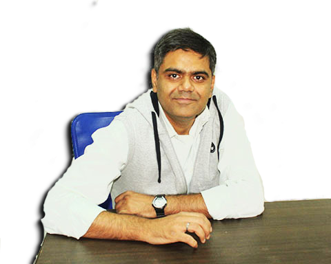
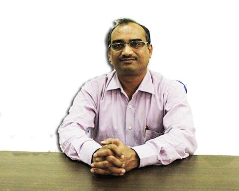
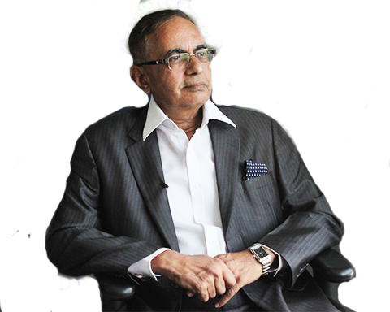
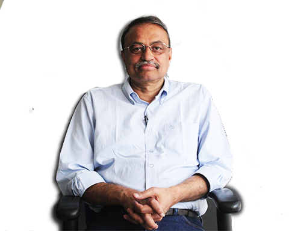
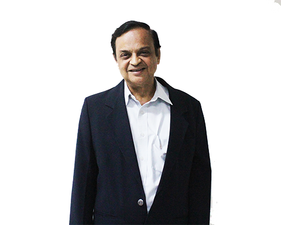
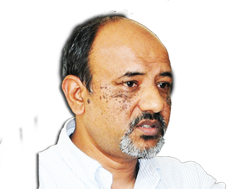

Management Team

Manish Kumar
CEO
Manish is the Co-founder & CEO of GREX. He is also a Sr. Venture Partner at the early stage Venture Capital firm IncuCapital, the principal promoter of GREX.
Manish built GREX because, he was gutted to see companies die because they couldn't run the process of fund raising when they could instead bring value to the world. He wanted to create a system where investors who wanted to contribute to emerging companies will get the best way to get involved, invest and grow together, with minimal stress.
Manish built GREX because, he was gutted to see companies die because they couldn't run the process of fund raising when they could instead bring value to the world. He wanted to create a system where investors who wanted to contribute to emerging companies will get the best way to get involved, invest and grow together, with minimal stress.

Sanjay Kumar Nishank
Director Technology
Sanjay is the Co-founder of GREX and is responsible for the Process and Technology functions at GREX. He brings to GREX 13+ years of cross cultural experience in Business Consulting and New Business Development initiatives through working across various IT consulting organizations.
Surojit Nandy
Director Operations
Surojit Nandy is the Co-founder of GREX and heads operations and corporate affairs. Surojit has in his career built revenue making and profitable companies across various sectors such as health care, real estate, and pharma.
Abhijeet Bhandari
Director Marketing
Abhijeet is the Co-founder of GREX and heads the Market Development activities. His journey of creating a platform like GREX began much before GREX itself in advising exchanges like the NSE to venture into this asset class.
Kris Nair
Vice President Marketing
Kris, one of the first members of the GREX team, leads the marketing activities. Apart from GREX, he also heads Product, Technology and Business at Fusedcow Inc, a data startup in architecture, engineering and construction Industry, and serves on the Investment Committee of Bold Capital, a seed fund.
Karanvir Singh
Vice President Business & Head Startups
Karan heads the business development activities at GREX. He has been a serial entrepreneur and investor, having founded, invested & exited in over 8 ventures. He was instrumental in launching the Pune Chapter of the Indian Angel Network and Startup Leadership Program.
Devaki Sahasrabuddhe
Vice President Market Engagement (Retail Investors)
Devaki leads our Market Engagement and Investor Relations initiatives. Devaki spent 16 years with companies like Kotak Mahindra Bank, TCS and Bharti AXA in wealth management and strategy.
Biharilal Deora
Vice President Market Engagement (Sponsor Development)
Biharilal leads the sponsor development at GREX. He is an expert in macroeconomic view development and experienced in developing sound valuation and short/long-term investment strategies in fixed income, equities and alternative investments.
Rajesh Dubey
Leader, Institutional Development
Rajesh is a Chartered Accountant & Cost and Management Accountant and leads institutional development at GREX.
Rajesh spent 17 years with SIDBI in Policy and SME lending divisions. On behalf of SIDBI and leading banks of India, he was instrumental in starting and heading SMERA, India’s first and only credit rating agency focused on the SME sector. Rajesh also co-created Credit Guarantee Fund Trust for Micro & Small Industries along with other industry partners.
Rajesh spent 17 years with SIDBI in Policy and SME lending divisions. On behalf of SIDBI and leading banks of India, he was instrumental in starting and heading SMERA, India’s first and only credit rating agency focused on the SME sector. Rajesh also co-created Credit Guarantee Fund Trust for Micro & Small Industries along with other industry partners.

Dinesh Badgujar
Vice President - Engineering
Dinesh has been building technology applications, processes, compliance and large infrastructure for leading BFSI and Electronic payment industry for last 16 years. He has delivered and deployed solutions for Growth and Scale, Disaster Recovery Management, Business Continuity Planning and Business Process Re-engineering for large enterprises. He also advised enterprises on business solutions using his expertise in Qualified Security Assessment, Enterprise Architecture and ethical hacking.
Vivek Garg
Sr Manager - Technology and Product
Vivek brings 15 years of technology and product management experience to GREX, and manages the product division.
Abhishek Gupta
Senior Technology Consultant
Abhishek is a Senior Technology Consultant at GREX and looks after architecture, design, development, testing, deployment, and maintenance of IT applications. He has 11+ years of extensive software development experience in multiple geographies (USA, India, and UK) that spans across multiple functional domains, including retail, intellectual property licensing and manufacturing.
Dimple Vora
Associate Admin
Dimple handles administration at GREX. Prior to GREX she was working with National Stock Exchange in the business excellence domain. She holds Masters in Commerce degree from Mumbai University.
Aditya Deshpande
Manager, PMO
Aditya leads Project Management Office at GREX. He has over 6 years of varied experience in technology, teaching and entrepreneurship. He co-founded 'Open Incubator Network', a network of incubators, to nurture budding entrepreneurs.
Madhuri Sawant
Legal Counsel
Madhuri is the legal counsel at GREX, and also assists the leadership with compliance and corporate affairs.
Madhuri Sawant
Legal Counsel
Madhuri is the legal counsel at GREX, and also assists the leadership with compliance and corporate affairs.
Governing Counsel

Haren Modi
He is associated with Link Intime India Private Limited, a leading Registry Service provider in securities market in India, as a Chief Operating Officer and is responsible for driving all primary market transactions at Link Intime for over 20 years.
He served as Chairman of “Registrar Association of India” (RAIN) for 2 years.
He also, worked with various committees/sub-groups set up by SEBI for Capital Market reforms like Electronic Refunds, “ASBA” as payment option, Listing of securities within 12 working days, introduction of “On-line option” in Debt issues and “e-ipo”.
Earlier, he worked with a large MNC as Systems Professional for over 22 years.
He served as Chairman of “Registrar Association of India” (RAIN) for 2 years.
He also, worked with various committees/sub-groups set up by SEBI for Capital Market reforms like Electronic Refunds, “ASBA” as payment option, Listing of securities within 12 working days, introduction of “On-line option” in Debt issues and “e-ipo”.
Earlier, he worked with a large MNC as Systems Professional for over 22 years.

Subramaniam Iyer
A Singaporean by birth, moved to Chennai India after a 21 year career with PricewaterhouseCoopers, which includes over 10 years as a Partner in the Advisory practice of the Singapore firm, and over 7 years as a business unit leader.
Executive Director, SmartKapital
Was partner in PwC
Executive Director, SmartKapital
Was partner in PwC

Durga Prasad
Over 25 years of experience
Consultant to World Bank on Governance and Institutional Development
On boards of incubation centre by SIDBI at IIT, Kanpur
A columnist for a leading financial newspapers Independent Director, Union KBC Trustee Company Private Limited
Honorary Sr. Professor, Centre for Organisation Development, Hyderabad
Avid Reader, Trainer and Banking & Financial Services Expert
Consultant to World Bank on Governance and Institutional Development
On boards of incubation centre by SIDBI at IIT, Kanpur
A columnist for a leading financial newspapers Independent Director, Union KBC Trustee Company Private Limited
Honorary Sr. Professor, Centre for Organisation Development, Hyderabad
Avid Reader, Trainer and Banking & Financial Services Expert
Mahendra Swaroop
Founding Partner of Avigo Capital
Ex-President - Indian Private Equity and Venture Capital Association.
30 years of business experience in operations, sales and distribution, purchasing/procurement, exports and human resources
Served as Managing Director and Chief Executive Officer at Times Internet Ltd.
Executive Director at PepsiCo India
Independent Director at Micromax Informatics Limited
Serves on Governing council of Western International University, NIILM, JB Business School and Global School of Management
Ex-President - Indian Private Equity and Venture Capital Association.
30 years of business experience in operations, sales and distribution, purchasing/procurement, exports and human resources
Served as Managing Director and Chief Executive Officer at Times Internet Ltd.
Executive Director at PepsiCo India
Independent Director at Micromax Informatics Limited
Serves on Governing council of Western International University, NIILM, JB Business School and Global School of Management
Kunal Nandwani
Cofounder/CEO – Utrade Solutions
MBA, Essec, Paris, and BE, PEC
Works with global financial institutions
Filed 6 patents leading innovation and comprising of high profile International Board members
Kunal was earlier VP at Nomura, London
MBA, Essec, Paris, and BE, PEC
Works with global financial institutions
Filed 6 patents leading innovation and comprising of high profile International Board members
Kunal was earlier VP at Nomura, London

MS Rao
An alumnus of IIM Ahmedabad
Has wide industry exposure to marketing turnarounds and growing new ventures in mainstream and new economy sectors
Was a CEO of a multinational telecom services company
Was a Professor for Marketing and set up the Center for Entrepreneurship at SPJIMR. SPJIMR is one of the five founding member institutions of the National Entrepreneurship Network for India (NEN), promoted by the Wadhwani Foundation
Jointly with Ms Laura Parkin, Executive Director NEN, he conceptualized the unique, annual entrepreneurial event of SPJIMR, Lock, Stock and Trade. LST exposes college students to entrepreneurs from India and abroad through an engaging mock IPO game
Has designed the pioneering Start Your Business Program for budding entrepreneurs and is the Coordinator of the program
He is also a Marketing faculty for the Exec MBA program
Mentors the faculty for realizing the Center's objective to be a self-sustaining center for industry collaboration and academic up-gradation
Has wide industry exposure to marketing turnarounds and growing new ventures in mainstream and new economy sectors
Was a CEO of a multinational telecom services company
Was a Professor for Marketing and set up the Center for Entrepreneurship at SPJIMR. SPJIMR is one of the five founding member institutions of the National Entrepreneurship Network for India (NEN), promoted by the Wadhwani Foundation
Jointly with Ms Laura Parkin, Executive Director NEN, he conceptualized the unique, annual entrepreneurial event of SPJIMR, Lock, Stock and Trade. LST exposes college students to entrepreneurs from India and abroad through an engaging mock IPO game
Has designed the pioneering Start Your Business Program for budding entrepreneurs and is the Coordinator of the program
He is also a Marketing faculty for the Exec MBA program
Mentors the faculty for realizing the Center's objective to be a self-sustaining center for industry collaboration and academic up-gradation

Gautam Sinha
He is a serial entrepreneur who started his first company in 1996. His first 2 companies failed and he proved third time lucky by exiting his third company in 2008 and coming out of what he calls the cycle of “work-leisure”
Started “MyFirstcheque” along with his 2 friends
He invests in startups through Myfirstcheque and also in his personal capacity as an angel investory
Post Graduate from XLRI
Started “MyFirstcheque” along with his 2 friends
He invests in startups through Myfirstcheque and also in his personal capacity as an angel investory
Post Graduate from XLRI

Deepak Natraj
Madhuri is the legal counsel at GREX, and also assists the leadership with compliance and corporate affairs.